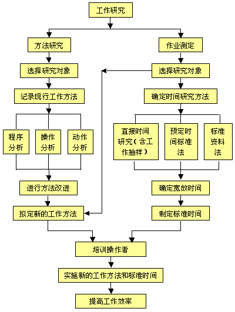

工作研究的内容
工作研究的显著特点是，在需要很少投资或不需要投资的情况下，可以使企业的生产率显著提高，从而提高企业的经济效益和增强竞争力。因此世界各国的企业都是把工作研究作为提高生产率的首选技术。工作研究包括方法研究和作业测定两大技术。
方法研究是帮助寻求完成任何工作的最经济、有效、合理的方法，以达到减少人员、机器、无效作业和物料消耗，并使该方法标准化。
作业测定是测定方法标准化后的作业时间，并制定出工序的标准时间，以达到减少人员、机器和设备的空闲时间。
工作研究的基本结构如图4-1。

方法研究着眼于现有工作方法的改进，其实施效果要运用作业测定来衡量。作业测定是努力减少生产中的无效时间，为作业指定标准时间。进行作业测定的基础是工作方法的合理化和标准化。
方法标准、时间标准最终使人、机、物达到最优组合，产生最佳效能，为企业应用其他工业工程
技术奠定基础。